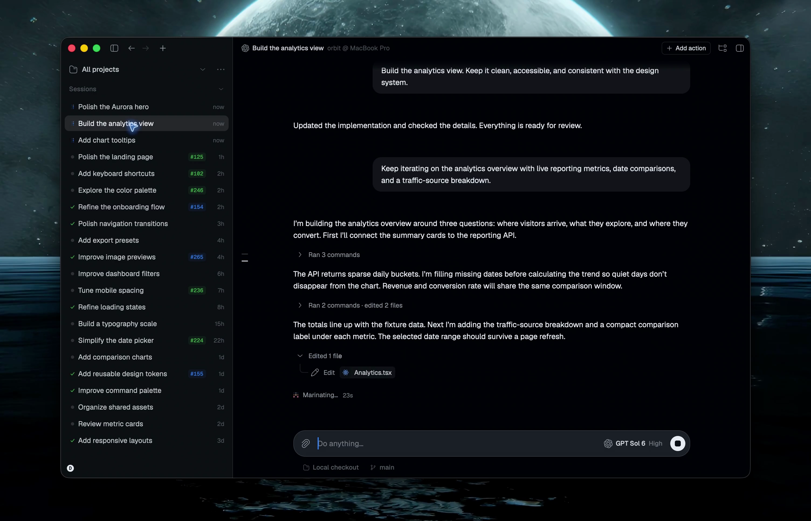

Hoje a aba do arquivo é passageira: existe uma só, e voltar para a Conversa a descarta. A proposta segue o que toda IDE ensinou: o que você abre fica aberto até você fechar, você alterna livre entre arquivos e a conversa, e o conjunto sobrevive a trocar de conversa e a reabrir o app. A Conversa continua âncora e nunca desmonta (a regra da ADR que criou as abas). E, para ler um arquivo sem perder o fio de vista, "Abrir ao lado da conversa".
Mapa vivo de superfícies, donos de estado e fronteiras Rust/TS. A conversa é a superfície-base: useChat guarda o estado operacional e o transcript; texto e anexos ainda não enviados pertencem a useComposerDrafts.
| superfície | dono do estado | regra |
|---|---|---|
| histórico de pedidos | derivado do fio | só fato do fio |
| alterações do projeto | Git via lib/git.ts | consulta sob demanda |
| abas de arquivo | store do projeto | abertas até você fechar |
A Conversa é a primeira, sempre, separada dos arquivos por um filete (com forks, "Original · Fork 1" ficam no mesmo lugar). Cada arquivo aberto ganha uma aba com o ícone do tipo, igual ao da árvore; o × aparece no hover e na ativa. Nome repetido ganha a pasta ("AGENTS.md · chat"). Na árvore, um ponto marca o que está aberto e o destaque marca o que está à vista. Muitas abas: a tira rola, com um esmaecido na borda, e o "5 ⌄" lista todas. Notas fica fixo na ponta, fora da rolagem: as abas nunca o empurram.
compara o quadro 20 com a nossa tela da fila: o espaçamento entre os itens está igual?
No quadro 20 cada item da fila tem 8 px entre linhas e a miniatura encosta no texto. Na nossa, a miniatura vem numa linha própria…

Por que lado a lado: o caso mais comum é ler um arquivo enquanto conversa sobre ele; alternar abas esconde um dos dois. Um lado só, à direita da conversa, com divisor arrastável; a aba desse arquivo leva o ícone de "lado" e tinta azul. O fio não desmonta: ele só fica mais estreito (o composer segue a regra de uma linha da ADR-240). Abaixo de 900 px de cartão o lado vira aba comum, porque não há largura honesta para dois.
| ⌘1 | Conversa |
|---|---|
| ⌘2 … ⌘9 | a aba de arquivo naquela posição |
| ⌃⇥ / ⌃⇧⇥ | próxima e anterior, na ordem da tira |
| ⌘W | fecha a aba de arquivo à vista (na Conversa não faz nada: ela não fecha) |
| ⌘⇧T | reabre a última aba fechada |
| clique do meio | fecha a aba |
| arrastar | reordena as abas de arquivo |
| volto para a Conversa | As abas ficam. É trocar de vista, não fechar (hoje a aba do arquivo sumia). |
|---|---|
| troco de conversa no mesmo projeto | As abas ficam: arquivos são do projeto, não da conversa. |
| troco de projeto | A tira mostra as abas daquele projeto; cada projeto lembra as suas. |
| fecho e reabro o app | Volta como estava: as abas, a ordem, qual estava à vista e o lado a lado. |
| o arquivo sai do disco | A aba fica riscada e o conteúdo diz "Este arquivo não está mais em docs/…", com Fechar. Nada some em silêncio. |
| o agente muda um arquivo aberto | A aba relê sozinha ao voltar para ela (mesmos sinais da aba Alterações, ADR anterior). |
| abro o mesmo arquivo de novo | Vai para a aba que já existe, sem duplicar. |
Este arquivo não está mais em docs/rascunho-v2.md. Pode ter sido movido, renomeado ou apagado.
Fechar a aba